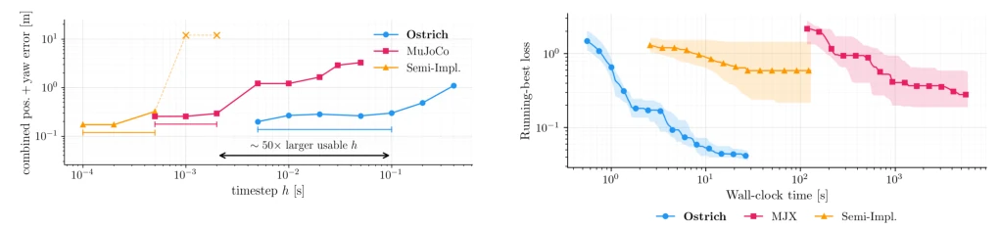
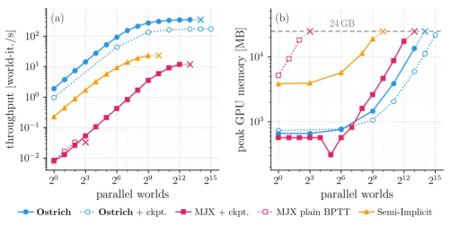
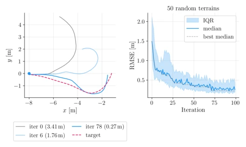

The name 'Ostrich' is quite evocative, striding confidently through hard contact like an ostrich. It has finally forcibly combined the 'impossible triangle' in differential simulation — large timestep, hard contact, low memory — together. 50 times the available timestep of MuJoCo, 8192 parallel worlds squeezed into a single 24GB card, this throughput is indeed impressive enough to warrant deep respect to the authors. But do not get too excited too soon, implicit Newton has higher per-step cost, elastic collisions are not supported, and gradients for contact birth/death must be truncated. This is no magic, clearly a hard bone gnawed through using Schur complement and IFT. For tasks requiring long horizon and complex terrain optimization, it indeed raises the threshold, but at the cost of memory and per-step computation. However, successfully implementing hard contact differential on GPU itself constitutes an important supplement to
研究动机Motivation
微分物理模拟在机器人轨迹优化中承诺了基于梯度的策略学习，但在长视界、高摩擦接触任务（如轮式车爬坡）中，现有引擎被迫在仿真精度、梯度可靠性和单步成本间做取舍。基于 Tape 的引擎如 MJX 和 Newton Semi-Implicit 需要极小的 timestep 来保持接触数值可解，且反向传播显存随步数 T 线性增长 [4], [5]。代理模型虽限制显存，却丢失了非完整牵引和局部滑动的几何信息 [6], [7]。隐式微分引擎理论上避免了两难，但多为 CPU 绑定或仅限原始几何 [8]-[10]。Ostrich 旨在解决这一痛点：在 GPU 上实现硬接触、大 timestep 下的稳定模拟，同时通过隐式函数定理保持梯度内存恒定，支持任意三角形网格和数千并行世界，填补了硬接触与大规模微分优化之间的空白。
Fig. 1. Gradient-based trajectory optimization through mesh terrain with Ostrich. Left: a wheeled robot’s control spline is optimized to reach the target (pink area) across a triangle-mesh heightmap. Trajectories are colored by optimization iteration, from the initial guess (purple) to the converged solution (red) after 26 iterations; each iteration backpropagates through the mesh- wheel contact forces (contact geometry held fixed within each step, §IV-D) at O(1) memory per timestep. Right: headline compari- son against MJX and Newton Semi-Implicit on the box-traversal scene (§IV): usable timestep, single-world optimization throughput (§IV-B), peak optimization throughput across parallel worlds, and control-synthesis success rate, on a single 24 GB GPU. The first three axes use a log scale
Fig. 2. Sim-to-real on real pallet traversals (14 runs). Far left: scene render of the robot mid-climb on the obstacle. Left: top- down trajectory for a representative held-out run (selected as the run closest to Ostrich’s and MuJoCo’s median error), with the per-run fitted obstacle footprint in gray and the recorded base path dashed in black. Middle: base z-elevation; all three engines reproduce the measured climb on this held-out run. Right: combined position-and-yaw error averaged over the ten held-out runs at each engine’s identified parameters.

Fig. 3. Accuracy vs. timestep on four held-out runs of the §IV-A dataset. Each engine runs at its identified parameters over an h grid. Brackets span each engine’s usable plateau, where error stays within 2× of its sweep minimum (the model-error floor); past the edge, integration error takes over. × marks diverged runs, plotted at the ceiling. The arrow spans Ostrich’s ∼50× larger usable h over MuJoCo (∼200× over Semi-Implicit).

Fig. 5. Optimization throughput (a) and peak GPU mem- ory (b) vs. number of worlds on the box-traversal scene of §IV-B (RTX 3090, 24 GB; NVML-polled). Solid: each engine’s operating configuration; dotted: the alternative (checkpointing for Ostrich, plain BPTT for MJX, which needs checkpointing to scale at all). ×: first failing batch size.

Fig. 6. Terrain traversal (10 s horizon, K=10 knots, triangle mesh). Left: example seed with initial guess (gray), intermediate iteration (light blue), and best iterate (blue) converging toward the target (dashed red). Right: RMSE median and IQR over 50 random terrains, 100 iterations; dashed: running best of the median (the text reports the median over seeds of each seed’s best RMSE).